LA MARCHE DES ÂMES
Manuel utilisateur complet — un RPG de marche où vos pas deviennent votre progression.
Français · English
Version {{APP_VERSION}} · Android 14+ · Garmin ou Santé ConnectHistoire
Les âmes ne meurent pas. Elles attendent.
On raconte qu'aux portes de Vael, la terre s'est ouverte un matin sans trembler. Pas de gouffre, pas de feu : une porte de pierre, basse, couverte de runes, et derrière elle un escalier qui descendait plus loin que la lumière.
Les premiers à y entrer ne sont pas revenus. Pas morts — retenus. Leurs noms sont restés accrochés aux murs, et depuis, chaque salle du donjon respire avec le souffle de quelqu'un qui n'a pas fini de partir.
Kaelen était pèlerin. Il portait une besace, une lame héritée, et une braise dans un pot de fer. On le disait lent. C'est pour ça qu'on lui a confié la marche : les âmes n'ont pas besoin de héros pressés.
Il a compris une chose simple : les donjons ne sont pas des tombeaux, ce sont des nœuds. Chaque palier est un fil serré autour d'une âme. Le gardien qui le scelle n'est pas un bourreau — c'est le dernier gardien d'une douleur, celui qui refuse de la laisser partir. Alors Kaelen marche. Dix pas pour un mètre, cent mètres pour un palier. Chaque pas est un mot dans une prière qu'il ne prononce pas à voix haute.
Aux Cryptes de Vael, la pierre est froide et les cierges brûlent sans cire. Aux Catacombes, l'air sent la mousse et les serments anciens. Dans les Cavernes de cendre, il apprend à respirer court. Dans la Forge noyée, il pose la main sur les enclumes et sent encore la chaleur de ceux qui forgeaient pour les vivants. Aux Cimes du Serment, le vent lui vole ses mots. Dans le Bois des Âmes, les arbres ont des feuilles d'or et des racines qui se souviennent. Dans l'Abîme organique, la pierre saigne et il ne s'arrête pas. Au Trône des Âmes, il n'y a plus de couloir : seulement une porte, un gardien, et derrière, la Première Âme, celle qui a refusé de partir la première.
La braise ne s'éteint jamais. Tant qu'il marche, elle veille ; quand il s'arrête, il la pose au centre du camp, et les âmes qui passent s'y réchauffent sans oser s'approcher.
Kaelen ne cherche pas la fin. Il sait qu'il n'y en a pas. Il cherche la prochaine âme qui acceptera de respirer.
« La défaite n'est qu'un détour. Vingt mètres en arrière, l'or coule encore. »
1. Découvrir le jeu
La Marche des Âmes est un RPG idle et pixel art. Vous ne pilotez ni la marche ni les combats : vous marchez dans la vraie vie, puis vos pas sont convertis en distance dans un donjon infini.
- Deux sources de pas au choix : Garmin (Personal API) ou Santé Connect — une seule active à la fois.
- 2FA dans le navigateur : l'application ne voit jamais votre mot de passe ni votre code Garmin.
- Aucun serveur éditeur : la progression et la clé restent sur le téléphone.
- 16 pistes d'ambiance 8 bits : deux variantes par biome, boucle longue et démarrage aléatoire.
- Vous décidez : forcer un coffre, changer d'équipement, lancer une potion, choisir une rencontre.
2. Installer et choisir sa source de pas
Installer l'APK
- Téléchargez le dernier APK depuis GitHub Releases.
- Autorisez l'installation d'applications inconnues pour votre navigateur ou gestionnaire de fichiers.
- Ouvrez l'APK et installez-le. Les mises à jour suivantes conservent les données.
Choisir la source de pas
Le jeu peut lire vos pas de deux façons, une seule à la fois :
- Garmin — clé personnelle Garmin (Personal API).
- Santé Connect — les pas enregistrés par Google Fit, Samsung Health ou une montre. Aucune clé n'est nécessaire, mais il faut autoriser la lecture des pas.
Le choix se fait à l'installation, puis dans Réglages → Source de pas. Changer de source ne recrédite pas les pas déjà comptés dans la journée : le premier import de la nouvelle source sert de base, et les pas suivants comptent normalement.
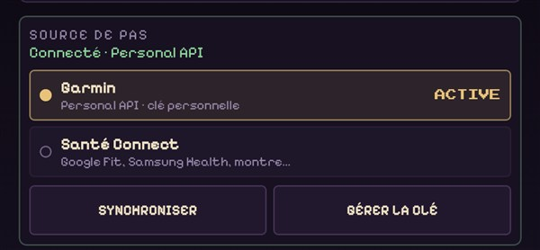
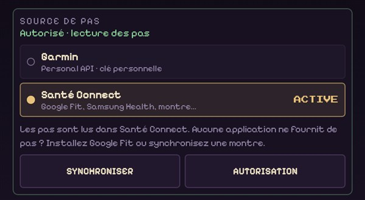
Créer la clé Garmin
- Dans le jeu, ouvrez Réglages (⚙) puis la section Compte Garmin.
- Appuyez sur Ouvrir Garmin Connect : la connexion et la 2FA se font dans le navigateur.
- Dans Garmin Connect, créez une Personal API Key et copiez-la.
- Collez la clé dans l'application.
- Saisissez la date d'expiration : Garmin ne l'expose pas via l'API.
- Appuyez sur Tester et enregistrer, puis Synchroniser.
Ce que fait la synchronisation
- La toute première synchronisation ne crédite que les pas de la journée : on ne démarre pas avec une réserve héritée de la semaine passée.
- Ensuite, elle lit les 7 derniers jours, sans jamais remonter avant la date de première connexion.
- Chaque jour n'est compté qu'une fois : pas de double comptage.
- Le rattrapage est plafonné à 100 000 pas par synchronisation (un marathon fait environ 45 000 pas).
- Les pas récupérés peuvent être simulés hors ligne : combats, or, paliers.
- La synchronisation Garmin tourne toutes les 60 minutes, à l'ouverture et manuellement. Santé Connect est lu à l'ouverture et manuellement : Android interdit sa lecture en arrière-plan sans une autorisation dédiée, donc le jeu ne la tente pas.
- Le diagnostic de synchronisation (Réglages) montre la source active, les 7 jours avec leur état (crédité, aujourd'hui, avant connexion, aucun pas) et les garde-fous appliqués.
3. La boucle quotidienne
Des pas à la distance
Chaque pas synchronisé augmente la réserve de marche. Le héros consomme cette réserve en continu : environ 30 pas/seconde, ou 60 pas/seconde quand la réserve est grande. Un pas n'est jamais consommé deux fois.
- Plafond journalier : 60 000 pas.
- Rythme suspect : au-delà de 250 pas/minute en moyenne depuis la dernière synchronisation, les pas excédentaires sont ignorés et signalés dans le journal.
- Réserve à zéro : le héros s'arrête. Il repart dès qu'une synchronisation apporte de nouveaux pas.
- Rencontres : tous les 10 m. Portail du gardien : à 90 m ; le combat se déclenche à 100 m si vous engagez.
Reset à 00:00
À minuit local : le compteur du jour, la ferveur, les quotas de rations/éclats et les serments repartent à zéro. La distance déjà parcourue, l'or, l'équipement et les paliers sont conservés.
4. Interface et HUD
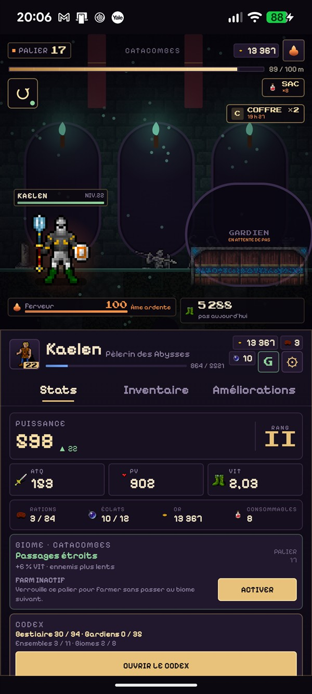
Lire l'écran d'un coup d'œil
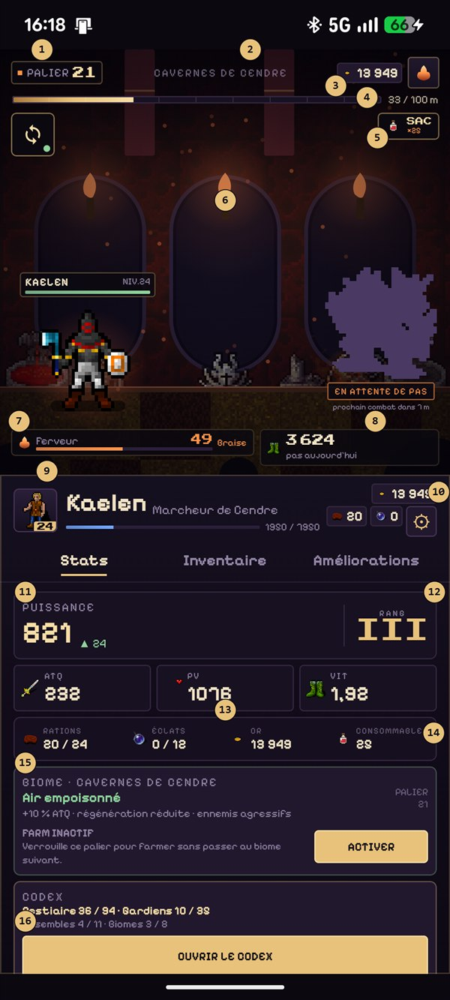
- Palier — étage courant. Un palier fait 100 m ; 8 biomes de 10 paliers.
- Biome — nom du biome traversé, avec sa règle active plus bas.
- Or — monnaie du jeu (forge, camp, marchand).
- Distance — progression dans le palier (0 à 100 m). Le portail du gardien apparaît à 90 m ; le combat se déclenche à 100 m si vous engagez.
- SAC — consommables en réserve ; appuyez pour les ouvrir.
- Scène — le couloir du biome : arches, torches, props au sol, héros à gauche, ennemi ou silhouette d'attente à droite.
- Ferveur — 0 à 100, gagnée avec les pas, décroissante après 2 h sans pas ; elle accélère la VIT et la régénération.
- Pas du jour — total synchronisé (Garmin ou Santé Connect), de minuit à minuit.
- Personnage — niveau, titre de palier, barre et valeur d'expérience.
- Devises et réglages — or, rations, éclats, et accès aux réglages (⚙). L'alerte « ! » apparaît si aucune source n'est configurée, si la clé Garmin expire ou si l'autorisation Santé Connect manque.
- Puissance — indicateur global de la force du héros (équipement, niveau, améliorations).
- Rang — palier de rang atteint (I, II, III…), calculé d'après la profondeur.
- Statistiques — ATQ (dégâts par attaque), PV maximum, VIT (vitesse d'attaque).
- Ressources — rations (plafond 30), éclats d'âme (plafond 24), or et consommables.
- Biome et farm — règle du biome et bouton FARM pour verrouiller le palier courant.
- Codex — bestiaire, ensembles et biomes découverts, avec accès direct.
- Réserve de pas — pas disponibles que le héros consomme (marche, combats, coffres). La barre est pleine à 4 000 pas.
Bandeau supérieur
- Palier et nom du biome.
- Or et bouton feu de camp.
- Jauge de palier : 0 à 100 m, avec le portail du gardien dans les 10 derniers mètres.
- SAC : consommables, soins et buffs.
- COFFRE : nombre de coffres en attente et temps restant. Un coffre ne bloque jamais la marche.
- Bouton de synchronisation : petit carré en haut à gauche, aligné avec le SAC. Icône ↻ et point d'état (vert = récent, ambre = ancien, rouge = erreur). Appuyez pour synchroniser ; si la source n'est pas prête (clé Garmin absente, autorisation Santé Connect refusée), il ouvre Réglages → Source de pas.
Pause de la marche
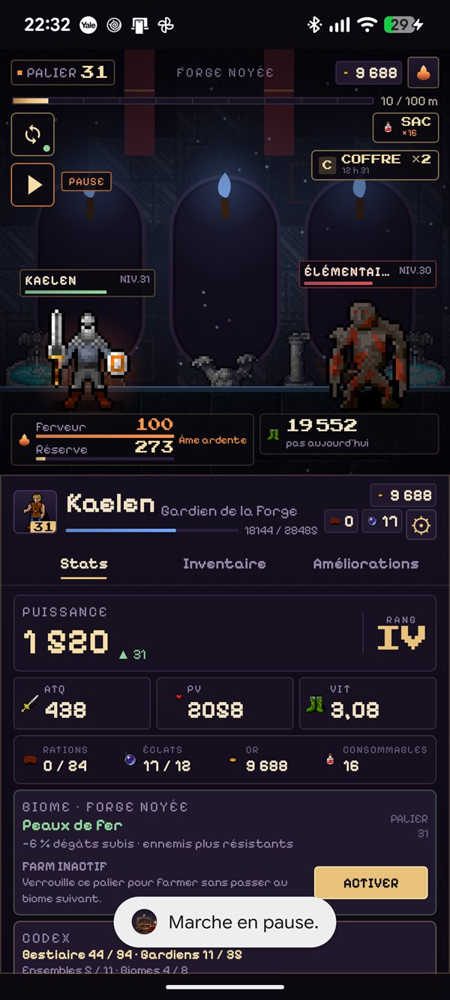
Le bouton carré sous la synchronisation fige la marche, les combats, l'ouverture des coffres et les animations. Un second appui reprend exactement au même point.
- La pause est conservée si vous passez en arrière-plan ; fermer complètement l'application la termine.
- La ferveur, les buffs temporisés, les coffres et le reset de minuit continuent de suivre l'horloge réelle.
- Le badge PAUSE reste visible tant que la marche est figée.
Scène
- Le héros à gauche, le monstre à droite.
- Barres de vie, noms, niveaux, dégâts flottants, critiques et soins.
- Aura de ferveur derrière le héros, particules de biome, porte du gardien.
Tableau de bord
- Stats : puissance, ATQ, PV, VIT, ressources, ferveur, serments, exploits, journal.
- Inventaire : équipement, butin, consommables, coffre de camp.
- Améliorations : trois améliorations permanentes et prochain gardien.
- Barre de synchronisation : remplacée par le bouton carré en haut à gauche de la scène. Les détails restent dans Réglages → Source de pas.
5. Combat automatique
Le combat est automatique. Le héros attaque selon sa VIT, l'ennemi selon son intervalle. Les dégâts dépendent de l'ATQ, de la ferveur, du critique et des effets d'équipement.
| Statistique | Effet |
|---|---|
| ATQ | Dégâts infligés. |
| PV | Points de vie maximum. |
| VIT | Vitesse d'attaque et régénération hors combat. |
| Critique | Chance de coup critique (dégâts renforcés). |
| Régénération | PV rendus par seconde. |
Gardiens
- Portail à 90 m : la marche s'arrête, le gardien est révélé avec ses PV, son ATQ, sa capacité et son modificateur.
- La fiche compare aussi les PV actuels / PV max et l'ATQ du héros pour préparer l'engagement.
- Choix : ENGAGER, FARMER CE PALIER ou CAMPER. Le combat ne démarre qu'après ENGAGER, à 100 m.
- Phase 2 sous 50 % de PV : capacité télégraphiée, sans accélération permanente.
- Pitié : chaque défaite affaiblit le gardien de −3 % PV/ATQ, cumulable jusqu’à −15 %, remis à zéro à la victoire.
- Relance : au portail, une fois par gardien, vous pouvez relancer son modificateur pour de l’or (coût indexé sur le palier).
- Ténacité : chaque défaite sur un palier donne +5 % ATQ/PV (max +25 %), remis à zéro à la victoire du gardien ou au changement de palier. Le portail et le HUD affichent le bonus.
- Après la victoire, les PV sont plafonnés à 65 % des PV max (farm compris) : le héros repart entamé et doit gérer ses rations.
- Modificateurs possibles : Rapide, Blindé, Berserk, Régénérant, Voleur. Rapide et Berserk ne se combinent jamais avec une capacité lourde (frappe, souffle, drain, pression).
Portail du gardien
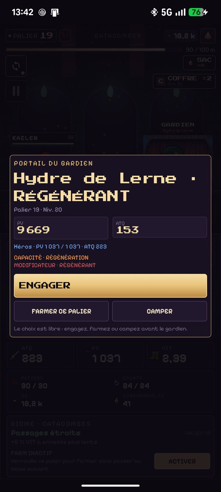
Le portail est un choix, pas un combat forcé. ENGAGER lance le gardien, FARMER CE PALIER verrouille le palier et renvoie au début pour farmer, CAMPER ouvre le camp. En progression hors ligne, la simulation s'arrête au portail et ne choisit jamais à votre place.
Capacités de gardien

| Capacité | Gardiens | Effet |
|---|---|---|
| Drain d'âme | Liche, Roi des Cryptes | Draine les PV du héros et soigne le gardien. |
| Régénération | Hydre | Rend environ 7 % des PV max du gardien. |
| Frappe lourde | Balrug, démons, bourreaux | Attaque très puissante. |
| Blindage | Golems, gardiens de la Forge | Réduit fortement les dégâts subis pendant 3 s. |
| Souffle | Dragons | Gros dégâts et vulnérabilité temporaire. |
| Racines | Tréant, dryades | Ralentit la VIT du héros. |
| Acide | Vases, zymes, horreurs | Dégâts et vulnérabilité temporaire. |
| Pression | Seigneurs du Trône | Dégâts et baisse de ferveur. |
Défaite et repli
- Le héros recule de 20 m et reprend à 60 % de PV.
- Zone de farm : trois combats affaiblis, puis la marche reprend.
- La défaite ne détruit ni or ni équipement.
6. Ferveur
La ferveur est l'élan quotidien. Elle monte avec les nouveaux pas et se consume avec le temps.
| Palier | Seuil | Bonus |
|---|---|---|
| Tison | 0–24 | Aucun bonus notable |
| Braise | 25–49 | +10 % VIT, +20 % régénération, +0,5 % crit. |
| Fournaise | 50–74 | +20 % VIT, +40 % régénération, +1 % crit. |
| Tempête | 75–99 | +30 % VIT, +60 % régénération, +1,5 % crit. |
| Âme ardente | 100 | +40 % VIT, +80 % régénération, +2 % crit. |
- Après 2 heures sans nouveau pas, la ferveur décroît d'environ 1 point toutes les 3 minutes.
- La décroissance est rattrapée même si l'application était fermée.
- Les champignons, herbes et potions peuvent la restaurer.
- Une aura de braise entoure le héros selon son niveau.
7. Ressources
La carte RESSOURCES de l'onglet Stats affiche en permanence : rations, éclats, or et nombre de consommables. Les rations sont aussi visibles dans l'en-tête et dans le camp.
- Rations : soin au camp, soin automatique d'urgence en combat, pain de route.
- Éclats : soin complet, identification, forge, autels.
- Or : améliorations, marchand, statue, forge, pari.
- Butin : les gardiens donnent 3 éclats et 2 rations ; les coffres donnent 2 éclats et 3 rations.
8. Serments journaliers
Trois objectifs optionnels, renouvelés à 00:00. Les cibles varient selon la date.
| Serment | Exemple de cible | Récompense |
|---|---|---|
| Marche | 2 500 à 4 000 pas | 150 or + 1 éclat |
| Chasse | 1 ou 2 gardiens | 250 or + 2 éclats |
| Curiosité | 1 ou 2 coffres | 100 or + 1 objet inhabituel |
- Les récompenses sont automatiques dès la cible atteinte.
- Un serment non accompli disparaît à minuit sans pénalité.
- La série de jours de marche et les pas de la semaine sont affichés dans la carte des serments.
9. Coffres
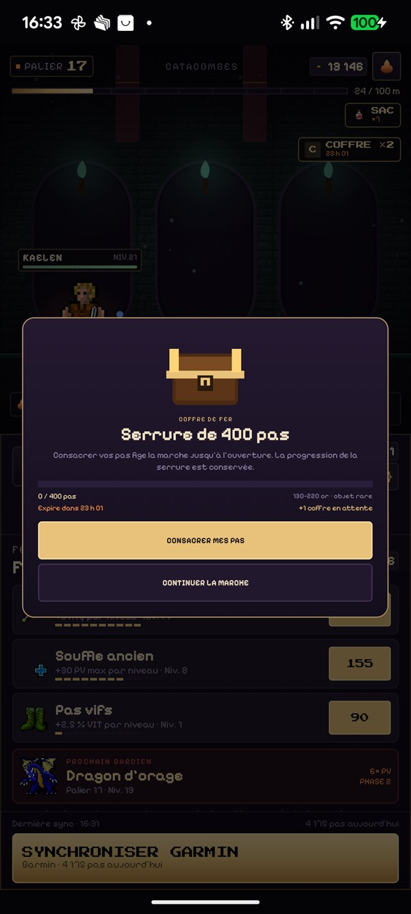
| Coffre | Quota | Or | Objet |
|---|---|---|---|
| Bois | 150 pas | 40–80 | Inhabituel |
| Fer | 400 pas | 130–220 | Rare |
| Runique | 900 pas | 380–550 | Épique |
- 24 h de conservation, 2 coffres en attente maximum.
- Un coffre peut être ignoré : la marche continue.
- Consacrer mes pas fige la marche et consomme la réserve pour remplir la serrure.
- Arrêter le forçage rend la marche ; la progression de la serrure est conservée.
- La croix (ou « Masquer · le forçage continue ») ferme la fiche sans interrompre le forçage : la pastille COFFRE affiche alors la progression de la serrure, ou « EN ATTENTE » s'il n'y a plus de pas.
- Les coffres lâchent aussi des consommables : 1 à 3 selon le type.
10. Campement

- Se reposer : +40 % PV pour 1 ration.
- Se ressourcer : PV complets pour 1 éclat.
- Veillée gratuite : +15 % PV, une fois par jour.
- POTIONS : ouvre le sac de consommables.
- INVENTAIRE / JOURNAL : gestion et historique.
- Reprendre l'expédition : ferme le camp et applique les pas en attente.
Le panneau affiche palier, distance, ferveur, PV, pas en attente, or, série et total de pas.
11. Inventaire et équipement
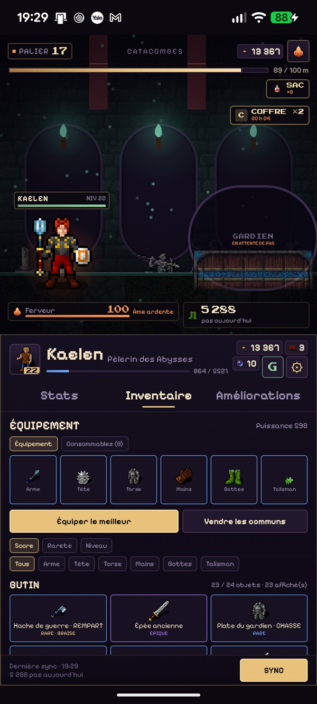
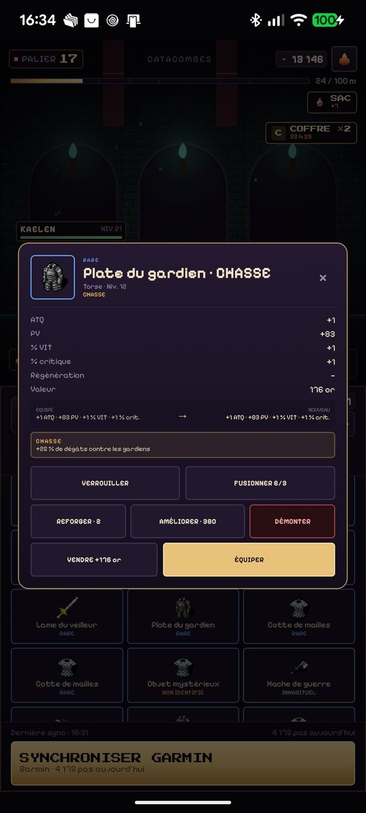
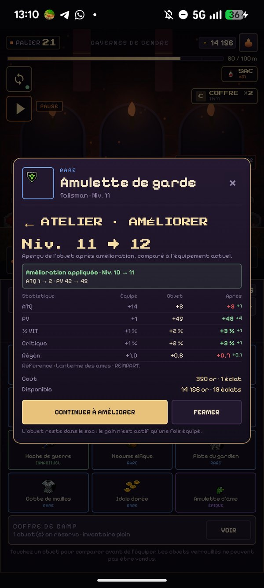
Six emplacements
Arme, tête, torse, mains, bottes, talisman. Un objet équipé remplace l'ancien, qui retourne dans le sac.
Raretés
Commun, inhabituel, rare, épique, légendaire. La couleur de la bordure et du nom l'indique. Les objets rares et plus peuvent avoir un effet, un ensemble ou être non identifiés.
Butin adapté au niveau : le niveau effectif du butin suit le héros : min(palier + 10, max(palier, niveau − 10)). Un joueur qui avance plus vite que son palier reçoit donc un stuff utilisable, sans casser l’identité de biome.
Actions
- Équiper le meilleur : compare les six emplacements et équipe chaque amélioration.
- Optimisation automatique : désactivée par défaut ; activez-la dans Réglages → Inventaire. Le mode identifie, fusionne les doublons non-set, forge avec réserves, achète le camp, équipe, ouvre les coffres et soigne automatiquement. Il ne touche pas aux objets verrouillés ni aux pièces de set.
- Vendre les communs : convertit les objets communs non verrouillés en or.
- Verrouiller : protège un objet de la vente et de la fusion.
- Fusionner : l'objet ouvert et les deux meilleurs objets identifiés et non verrouillés du même emplacement et de la même rareté donnent un objet de rareté supérieure. Trois légendaires donnent un légendaire fusionné. Le résultat conserve 90 % de la somme des statistiques, ainsi que l'effet et l'ensemble. Le bouton affiche FUSIONNER quand les trois sont réunis, sinon FUSIONNER 2/3 et reste grisé.
- Identifier : 1 éclat révèle les statistiques d'un objet mystérieux.
- Reforger : 1 éclat retire ou remplace l'effet (tirage aléatoire).
- Améliorer : or + 1 éclat augmentent le niveau, l'ATQ et les PV.
- Démonter : détruit l'objet contre des éclats.
Trier et filtrer le butin
Score, Rareté et Niveau changent l'ordre de la liste ; le choix est conservé quand vous changez d'onglet. Le bouton Fusion est un filtre indépendant : activé, il ne montre que les objets dont le bouton FUSIONNER est actif, c'est-à-dire ceux qui ont au moins deux partenaires éligibles. Il se combine avec le filtre d'emplacement (Tous, Arme, Tête, Torse, Mains, Bottes, Talisman) et affiche « Aucun objet fusionnable. » quand la liste est vide.
Atelier : comparer, améliorer, reforger
La fiche d'objet commence par un tableau Statistique / Équipé / Cet objet : la valeur de l'objet est verte si elle dépasse l'équipement, rouge sinon, avec le gain en petit. Pour un objet équipé, le tableau devient Actuel / Après +1 niv. et une ligne Héros indique l'impact sur l'ATQ et les PV totaux. La valeur de vente reste sous le tableau.
AMÉLIORER ouvre l'atelier : niveau actuel → suivant, tableau des statistiques (Équipé, Objet, Après), coût en or et éclats, puis bouton de validation. Après une amélioration, la feuille reste ouverte : un bandeau rappelle le gain appliqué, l'aperçu passe au niveau suivant et CONTINUER À AMÉLIORER enchaîne sans revenir à l'inventaire. La flèche ← revient à la fiche, FERMER quitte.
REFORGER ouvre l'atelier des effets pour 1 éclat. Le tirage est aléatoire : 25 % aucun effet, 12,5 % pour chacun des six effets. Le niveau, les statistiques et l'ensemble ne changent pas ; l'effet peut rester identique ou disparaître. Le résultat affiche ancien → nouveau, puis REFORGER ENCORE relance un tirage.
Ensembles et forge
- Onze ensembles : Veilleur, Braise, Givre, Ossature, Toile, Cendre, Forge, Serment, Bois, Abîme et Trône.
- Chaque ensemble couvre les 6 emplacements : arme, tête, torse, mains, bottes, talisman. Il se complète à 6/6.
- La collection est permanente : une pièce découverte reste acquise même si vous la vendez, la démontez ou la fusionnez. Les pièces du sac, du coffre et de l'équipement comptent, identifiées ou non.
- Les bonus ne s'appliquent qu'aux pièces équipées : paliers à 2, 4 et 6 pièces. Avoir 6 pièces au sac ne donne aucun bonus.
- Chaque biome ne fait tomber que ses propres ensembles, sur un butin rare, épique ou légendaire, avec 30 % de chance d'être une pièce d'ensemble. Le slot est tiré au hasard : les doublons sont fréquents.
- La forge se débloque après le premier gardien vaincu.
- Les objets peuvent porter Vampirisme, Rempart, Frénésie, Chasse, Vitalité ou Précision. Le soin de vampire est plafonné à 3 % des PV max par seconde.
- Le héros affiche un paper doll : casque, armure, jambes, bottes et arme changent selon l'équipement porté.
- L'apparence suit la famille d'objet : épée, hache, masse, bâton, dague, lance ou fouet ; cuir, maille, plate ou robe ; capuche, heaume ou couronne ; bottes de cuir ou de métal. La rareté départage les objets sans famille.
- Touchez un emplacement équipé pour ouvrir sa fiche, comparer et voir ses statistiques. Les mains et le talisman ne changent pas le sprite.
Coffre de camp
L'inventaire est limité à 24 objets. Quand il est plein, le jeu compare le nouvel objet au moins bon objet non verrouillé : le meilleur reste dans le sac et l'autre part au coffre. Les objets verrouillés ne sont jamais déplacés automatiquement. Les objets non identifiés utilisent un score provisoire basé sur la rareté et le niveau. Aucun objet n'est détruit : vous pouvez les récupérer un par un, ou en bloc si tout tient dans l'inventaire.
Capacité : quand l'inventaire est plein, les boutons PRENDRE sont grisés. TOUT PRENDRE n'est actif que si tous les objets du coffre tiennent dans les places libres ; sinon il reste grisé et indique combien de places manquent. Le raccourci Coffre de camp du camp suit la même règle.
Aller-retour : dans la fiche d'un objet de l'inventaire, l'icône coffre en haut à droite, à côté de la croix, envoie l'objet au coffre. Elle est grisée si l'objet est verrouillé et absente s'il est équipé. Un appui sur un objet du coffre ouvre une fiche réduite : comparaison avec l'équipement porté, PRENDRE si une place est libre, VENDRE et DÉMONTER.
12. Consommables

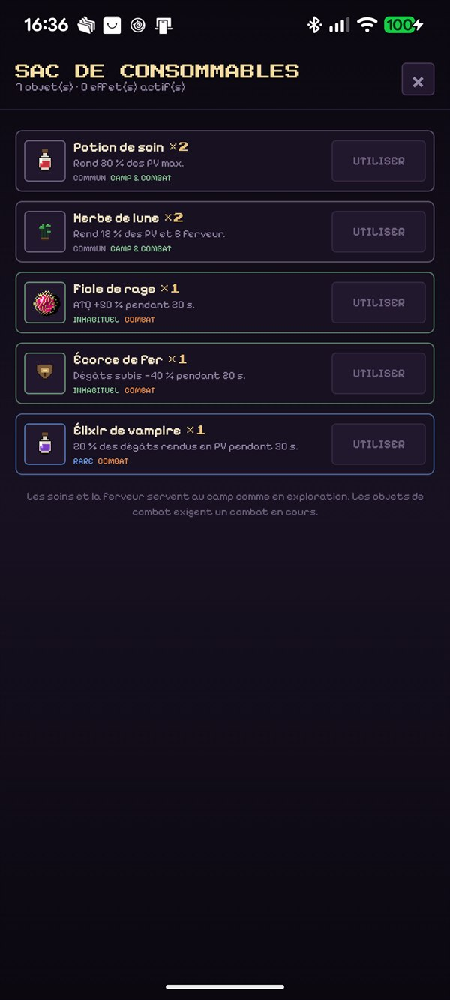
Soins et ferveur — camp et exploration
| Objet | Rareté | Effet |
|---|---|---|
| Potion de soin | Commun | Rend 30 % des PV max. |
| Herbe de lune | Commun | Rend 12 % des PV et 6 ferveur. |
| Champignon de braise | Inhabituel | Rend 20 ferveur. |
| Élixir du veilleur | Rare | Restaure tous les PV. |
| Pain de route | Commun | Rend 20 % des PV et 1 ration. |
| Viande séchée | Commun | Rend 25 % des PV et 1 ration. |
Combat — pendant un combat uniquement
| Objet | Rareté | Effet |
|---|---|---|
| Fiole de rage | Inhabituel | ATQ +50 % pendant 20 s. |
| Écorce de fer | Inhabituel | Dégâts subis −40 % pendant 20 s. |
| Poudre d'éclair | Inhabituel | VIT +60 % pendant 15 s. |
| Bombe de feu | Rare | Inflige immédiatement 2× votre ATQ. |
| Élixir de vampire | Rare | 20 % des dégâts rendus en PV pendant 30 s. |
| Parchemin critique | Rare | Critique +50 % pendant 15 s. |
| Champignon berserk | Rare | ATQ +80 %, mais dégâts subis +20 % pendant 15 s. |
| Potion de hâte | Rare | VIT +60 % pendant 20 s. |
| Potion de force | Inhabituel | ATQ +40 % pendant 20 s. |
| Potion de régénération | Rare | Régénération +2 PV/s pendant 30 s. |
Où les trouver
- Monstres normaux : 18 % de chance, 1 objet.
- Gardiens : 1 à 2 objets garantis.
- Coffres : 1 à 3 objets selon le type.
- Départ : 2 potions de soin et 1 herbe de lune.
Effets actifs et durée restante
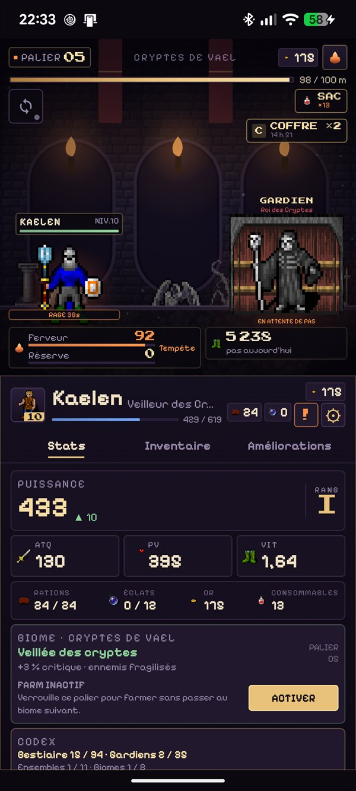
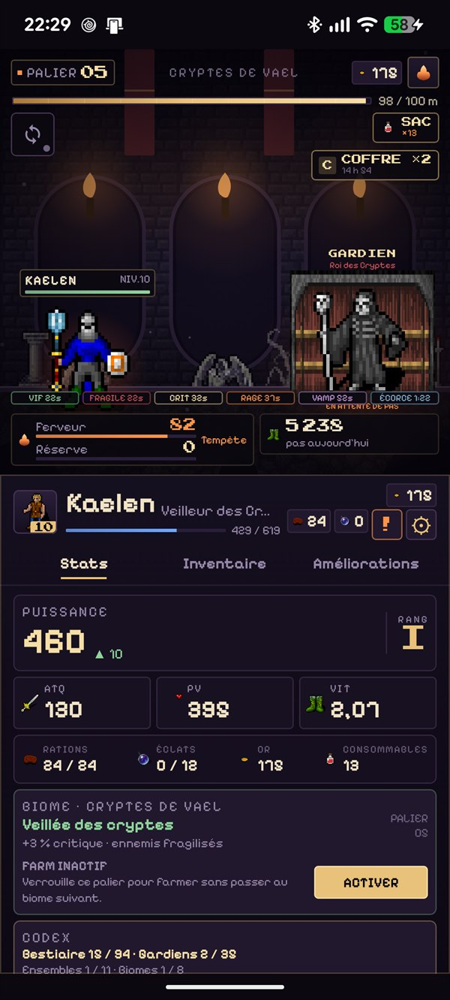
Les effets temporisés apparaissent dans un bandeau d'une seule ligne, juste au-dessus de la ferveur et de la réserve. Il affiche jusqu'à 6 effets avec leur durée restante. La largeur de chaque chip est la largeur disponible divisée par le nombre d'effets, plafonnée à un tiers.
- Les bonus sont colorés par famille : attaque, défense, vitesse, critique, vol de vie et régénération.
- Les malus (FRAGILE, RACINES, ACIDE, GIVRE) apparaissent en rouge.
- Le compte à rebours se rafraîchit chaque seconde, même quand le jeu est en pause ou le sac ouvert.
- Les durées sont réelles : un effet de 30 s expire au bout de 30 s, même application fermée. Utilisez-les juste avant de jouer.
- Le bandeau disparaît quand aucun effet n'est actif et ne réserve aucun espace.
13. Rencontres spéciales
Environ 8 % des rencontres sont remplacées par un événement. Il n'est jamais obligatoire.
| Rencontre | Choix | Résultat |
|---|---|---|
| Autel de braise | Offrir 2 éclats | +180 XP |
| Source claire | Boire 1 ration | PV complets |
| Marchand errant | Acheter avec de l'or | Objet rare ou épique |
| Statue du serment | Prier 100 or | +15 ferveur, +1 éclat |
| Coffre scellé | Parier 100 or | 45 % : +300 or · 55 % : perdu |
Après chaque choix, une fenêtre RÉSULTAT affiche clairement le gain ou la perte. Pour le pari : « Pari gagné · +300 or » ou « Pari perdu · −100 or ».
14. Progression et contenu
Niveaux et expérience
Les monstres, gardiens, serments et événements donnent de l'XP. Chaque niveau augmente l'ATQ, les PV et la VIT, et soigne 25 % des PV max. La courbe ralentit progressivement.
Une défaite accorde 25 % de l'XP du combat, sans or ni butin : même sans optimiser, le héros finit par monter de niveau et par passer le palier.
Améliorations permanentes
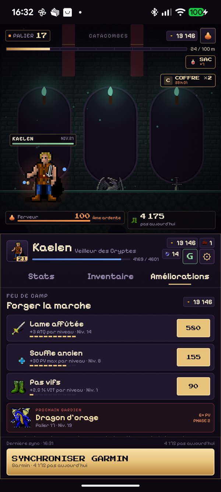
- Lame affûtée : +3 ATQ par niveau.
- Souffle ancien : +30 PV max par niveau.
- Pas vifs : +2,5 % VIT par niveau.
Jalons
- Tous les 10 paliers : +5 % d'or, 8 éclats, nouveau titre, entrée dans la légende.
- Paliers 10, 25, 50 et 100 : gardiens uniques.
- Après le palier 10, un facteur de profondeur augmente les PV et l'ATQ ennemis.
Biomes
Le donjon traverse 8 biomes, chacun avec ses murs, sols, statues, props, portes et météo. Le changement se fait tous les 10 paliers.
| Paliers | Biome | Ambiance |
|---|---|---|
| 1–10 | Cryptes de Vael | Pierre violette, poussière, portes fermées. |
| 11–20 | Catacombes | Pierre verte, spores, portes runiques. |
| 21–30 | Cavernes de cendre | Roche volcanique, braises, fontaines de sang. |
| 31–40 | Forge noyée | Métal, étincelles, bassins bleus. |
| 41–50 | Cimes du Serment | Glace, neige, cristaux. |
| 51–60 | Bois des Âmes | Herbe, arbres d'or, feuilles. |
| 61–70 | Abîme organique | Slime, spores, acidité. |
| 71+ | Trône des Âmes | Enfer rouge, cendres, portes scellées. |
Règles de biome
Chaque biome applique un modificateur au héros et aux ennemis. La carte BIOME de l'onglet Stats affiche la règle active.
| Biome | Règle | Effet |
|---|---|---|
| Cryptes | Veillée des cryptes | +3 % critique · ennemis fragilisés. |
| Catacombes | Passages étroits | +6 % VIT · ennemis plus lents. |
| Cendre | Air empoisonné | +10 % ATQ · régénération réduite · ennemis agressifs. |
| Forge | Peaux de fer | −6 % dégâts subis · ennemis plus résistants. |
| Cimes | Vent glacial | +8 % VIT · −5 % PV max · ennemis rapides. |
| Bois | Sève ancienne | +0,5 PV/s · ennemis coriaces. |
| Abîme | Acidité | +12 % ATQ · −5 % PV max · ennemis fragiles mais violents. |
| Trône | Pression des âmes | +12 % dégâts gardiens · −8 % PV max · ennemis renforcés. |
| Trône (81+) | Trône brisé | +15 à +35 % PV et ATQ ennemis · gardiens renforcés · boss final au palier 100. |
Écart de niveau : au-delà de 4 niveaux d'avance sur le palier, les ennemis gagnent +2 % PV et ATQ par niveau d'écart, avec un plafond de ×1,25. Au niveau du palier, aucun malus.
Courbe de palier early game : les ennemis voient leurs PV et leur ATQ augmenter progressivement jusqu’à ×3,0 PV / ×2,5 ATQ entre les paliers 6 et 8, puis revenir à la normale au palier 20. Le premier gardien et le début de partie restent accessibles ; le milieu de partie demande d’améliorer l’équipement.
Mode farm
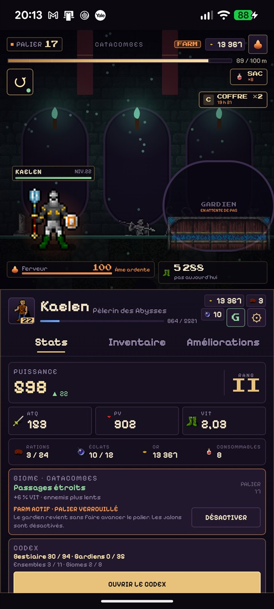
Le mode farm se trouve dans la carte BIOME de l'onglet Stats. Il est inactif par défaut.
- ACTIVER : verrouille le palier actuel. Le gardien vaincu ne fait plus passer au palier suivant ; le palier repart du début.
- DÉSACTIVER : le prochain gardien vaincu fait avancer normalement.
- Un badge FARM s'affiche dans le HUD tant que le mode est actif, avec RÉCUPÉRATION · +10 % PV par victoire de farm.
- Un gardien farmé plafonne aussi les PV à 65 % des PV max après la victoire : le farm reste une source de butin, pas un soin complet.
- Marchand de camp : achetez potions de soin, écorce de fer, potion de force ou élixir avec de l'or.
- Respec : rembourse 70 % de l'or investi et remet Lame affûtée, Souffle ancien et Pas vifs à zéro.
- Pendant le farm, les jalons sont désactivés : pas de +8 éclats ni d'entrée de légende répétée. Le butin, l'or et l'XP du gardien restent.
- Un gardien farmé donne +1 éclat et +1 ration, dans la limite de 5 gardiens farmés par jour ; au-delà, seul le butin continue.
- Le réglage est conservé dans la sauvegarde et survit au redémarrage.
Durée de vie estimée
Le donjon continue sans fin après le palier 100, mais il a désormais une fin : le palier 100 se termine par un combat contre L'Âme Première, puis un écran de fin s'affiche une seule fois. « Finir » signifie ici atteindre cette fin, puis compléter le Codex ({{MOB_COUNT}} monstres, {{BOSS_COUNT}} gardiens, {{SET_COUNT}} ensembles). Le calcul part de 1 000 pas par palier (10 pas = 1 m, 100 m par palier) et applique un coefficient de farm de 3 à 5 (jusqu'à 6 pour le Codex) pour les retraites, les gardiens réessayés, les coffres et la recherche d'équipement.
| Objectif | Pas (distance pure) | 5 000 pas/jour | 8 000 pas/jour | 10 000 pas/jour |
|---|---|---|---|---|
| 8 biomes · palier 71 | 70 000 | 6 à 10 semaines | 4 à 6 semaines | 3 à 5 semaines |
| Titre Légende des Âmes · palier 100 | 100 000 | 2 à 3,5 mois | 5 à 9 semaines | 4 à 7 semaines |
| Codex complet | ≈ 150 000 | 4 à 6 mois | 2,5 à 4 mois | 2 à 3 mois |
En temps de marche effectif (≈ 100 pas/minute), cela représente environ 12 h pour les 8 biomes, 17 h pour le palier 100 et 25 h pour le Codex. Le reste du temps est du farm, pas de la marche.
Fin du sentier · palier 100
Du palier 81 au palier 100, la règle Trône brisé remplace Pression des âmes. La pression monte progressivement : +15 % de PV et ATQ ennemis au palier 81, +35 % au palier 100, puis plafond. Les gardiens du Trône reçoivent en plus +10 % PV et +5 % ATQ.
- Palier 100 : L'Âme Première devient un boss final dont les PV s'adaptent au DPS du héros pour viser 20–30 s de combat (base ×1,35, multiplicateur 0,75–3,5 selon la puissance), avec une ATQ de base ×0,80. Trois phases : 100–66 %, 66–33 %, 33–0 % ; la capacité s'accélère et l'ATQ augmente de +8 % puis +12 %. Elle lance RUPTURE DU TRÔNE : 230 % de son ATQ, −20 ferveur et 3 % de PV rendus.
- Victoire : un écran de fin s'affiche une seule fois : statistiques du héros, progression, télémétrie, gardiens 81-100, économie, équipement porté, collections et jalons. Un bouton exporte ce rapport en HTML. Une entrée de légende est ajoutée au journal.
- CONTINUER SANS FIN : le jeu reprend au palier 101. La difficulté reste plafonnée, les gardiens et les jalons continuent (125, 150, 200…).
- Au camp : l'aura dorée et la statue du héros restent visibles après le palier 100.
Galerie des biomes
Chaque biome possède son décor, sa météo et ses créatures. Le paper doll du héros reflète l'équipement porté.

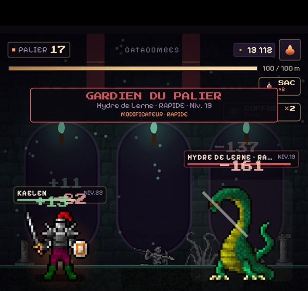
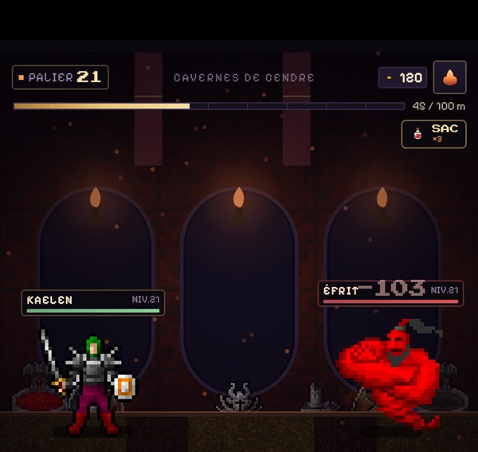

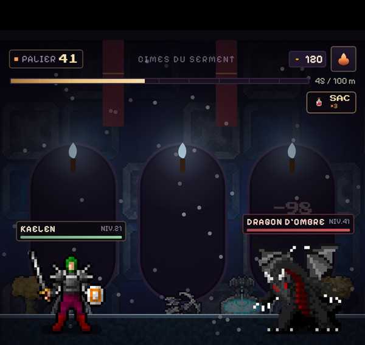


Créatures et butin
- Chaque biome a ses monstres faciles (0–49 m), intermédiaires (50–84 m), difficiles (85–99 m) et ses gardiens.
- Les tables de butin sont propres au biome : armes, armures, casques, bottes, gantelets et talismans thématiques.
- Les paliers 10, 25, 50 et 100 gardent des gardiens de jalon ; les autres paliers font tourner les boss du biome.
- Les ensembles de biome sont favorisés dans leur région : Ossature et Toile aux catacombes, Cendre dans les cavernes, Forge dans la forge, Serment aux cimes, Bois dans la forêt, Abîme dans l'abîme et Trône au sommet.
Rangs et titres
Le rang progresse avec les paliers : Pèlerin, Veilleur des Cryptes, Pèlerin des Abysses, Marcheur de Cendre, Gardien de la Forge, Souverain des Cimes, Veilleur du Bois, Marcheur de l'Abîme, Légende des Âmes.
15. Journal, légende, bestiaire
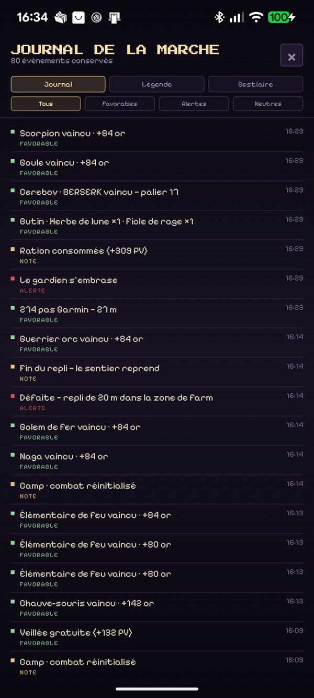
- Journal : 80 événements, filtres Favorables / Alertes / Neutres.
- Légende : jalons et hauts faits persistants.
- Bestiaire : nombre de victimes par créature.
- Les événements sont aussi résumés dans l'onglet Stats.
Codex
Le Codex se trouve dans Stats → carte CODEX → OUVRIR LE CODEX. Il suit la collection sur trois onglets.
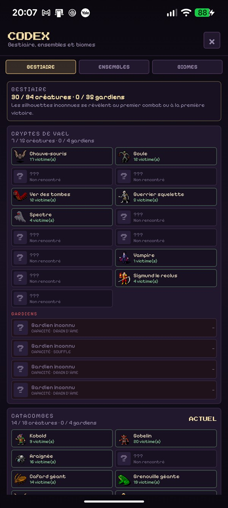
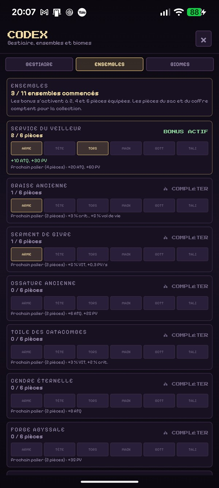
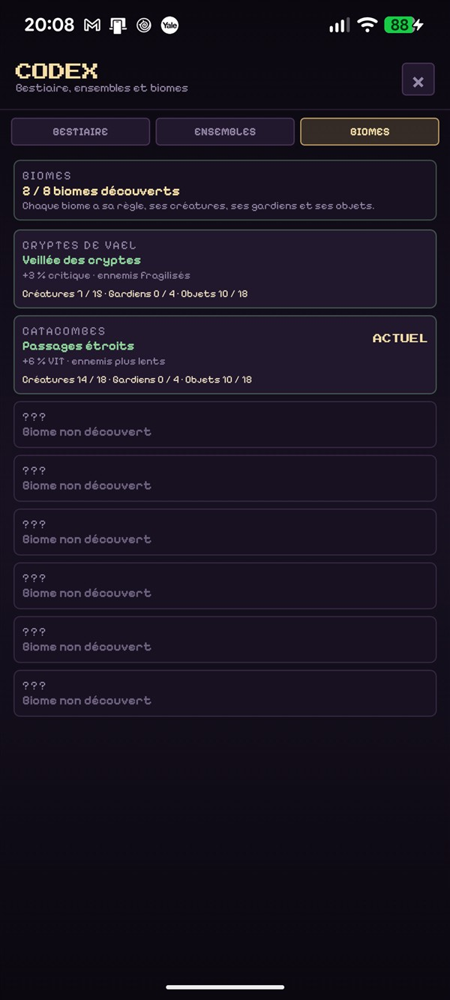
- Bestiaire : une créature est révélée à la première victoire. Les gardiens sont suivis séparément.
- Ensembles : la collection est permanente (une pièce découverte reste acquise même si vous la vendez) ; l'onglet distingue Collection x/6 et Équipé y/6, affiche les slots manquants, le biome où farmer et le prochain palier. Seules les pièces équipées donnent le bonus 2/4/6.
- Biomes : un biome est découvert dès que vous atteignez son premier palier. Le Codex affiche sa règle, ses créatures, ses gardiens et ses objets.
- Les objets déjà possédés sont reconnus immédiatement ; les objets ramassés ensuite sont ajoutés à la collection.
Compléter une collection
Un ensemble se complète à 6/6 : il faut une pièce de chacun des six emplacements (arme, tête, torse, mains, bottes, talisman) portant le même nom d'ensemble.
- Où farmer : chaque ensemble ne tombe que dans un ou deux biomes. Le Codex affiche « Se trouve : … » sur la fiche de l'ensemble.
- Quand : seuls les butins rares, épiques ou légendaires peuvent être des pièces d'ensemble, avec 30 % de chance. Le slot est tiré au hasard : les doublons sont fréquents et n'aident pas à compléter.
- Pièce non identifiée : elle compte déjà dans la collection. Identifiez-la (1 éclat) pour révéler son ensemble et son bonus dans la fiche.
- Bonus : équipez 2, 4 puis 6 pièces du même ensemble. Le Codex affiche le bonus actif et le prochain palier ; la fiche d'objet rappelle « équipé y/6 · collection x/6 ».
| Ensemble | Biome(s) | 2 pièces | 4 pièces | 6 pièces |
|---|---|---|---|---|
| Veilleur | Cryptes de Vael (1–10) | +10 ATQ, +30 PV | +20 ATQ, +60 PV | +30 ATQ, +90 PV |
| Ossature | Cryptes (1–10), Catacombes (11–20) | +6 ATQ, +25 PV | +12 ATQ, +50 PV | +18 ATQ, +75 PV |
| Toile | Catacombes (11–20) | +3 % VIT, +2 % critique | +6 % VIT, +4 % critique | +9 % VIT, +6 % critique |
| Braise | Cavernes de cendre (21–30) | +3 % critique, +5 % vol de vie | +6 % critique, +10 % vol de vie | +9 % critique, +15 % vol de vie |
| Cendre | Cavernes de cendre (21–30) | +8 ATQ | +16 ATQ, +3 % critique | +24 ATQ, +6 % critique |
| Forge | Forge noyée (31–40) | +35 PV | +70 PV, −3 % dégâts subis | +105 PV, −6 % dégâts subis |
| Givre | Cimes du Serment (41–50) | +5 % VIT, +0,3 PV/s | +10 % VIT, +0,6 PV/s | +15 % VIT, +0,9 PV/s |
| Serment | Cimes du Serment (41–50) | +7 ATQ | +14 ATQ, +8 % dégâts gardiens | +21 ATQ, +16 % dégâts gardiens |
| Bois | Bois des Âmes (51–60) | +4 % VIT | +8 % VIT, +0,7 PV/s | +12 % VIT, +1,2 PV/s |
| Abîme | Abîme organique (61–70) | +20 PV, +4 % vol de vie | +40 PV, +8 % vol de vie | +60 PV, +12 % vol de vie |
| Trône | Trône des Âmes (71+) | +10 ATQ | +20 ATQ, +15 % dégâts critiques | +30 ATQ, +30 % dégâts critiques |
Fiche de créature et de gardien
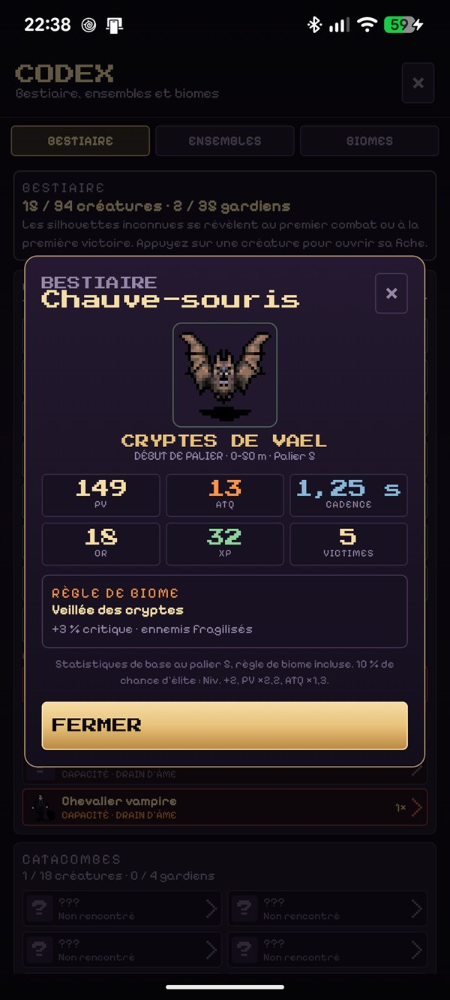
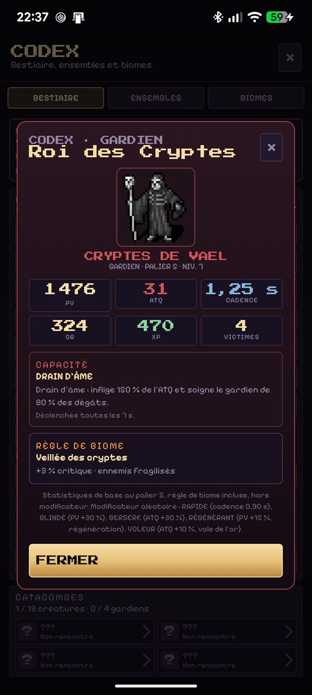
Appuyez sur une créature ou un gardien pour ouvrir sa fiche. Elle affiche son image, son biome et son palier de première rencontre, sa zone d'apparition, son niveau, ses PV, son ATQ, sa cadence, l'or et l'XP donnés, le nombre de victimes et la règle de biome. Les statistiques sont celles de la première rencontre. Pour un gardien, la capacité et ses effets sont aussi détaillés, ainsi que les modificateurs aléatoires possibles. Une créature non vaincue reste verrouillée jusqu'à la première victoire. Les fiches suivent la taille du texte choisie dans les réglages.
16. Réglages

- Taille du texte : Normal, Grand, Très grand, Maximal.
- Notifications : activées/désactivées, avec cases rencontre en attente, gardien, gardien en attente, niveau, serments, coffres, clé Garmin.
- Heures calmes : 22:00–08:00, alertes sans vibration.
- Animations réduites : supprime le balancement, les auras et les nombres flottants.
- Vibrations : retour haptique des alertes.
- Sons 8 bits : activés/désactivés, volume 0–100 %, bouton Tester le son.
- Vendre les communs automatiquement : convertit les communs au ramassage.
- Source de pas : Garmin ou Santé Connect, avec autorisation, synchronisation manuelle et journal de synchronisation.
- Diagnostic de synchronisation : source active, fenêtre d'import jour par jour avec l'état de chaque journée, garde-fous (7 jours, 60 000 pas/jour, 100 000 pas par import, 250 pas/min) et bouton de synchronisation.
- Télémétrie d'équilibrage : victoires et combats normaux (hors farm), victoires et tentatives de gardiens, essais et victoires du palier, durée moyenne des combats, paliers et ennemis vaincus, rations, éclats et or. Données locales, sans réseau.
- Sauvegarde : exporter, importer avec aperçu, exporter le rapport d'équilibrage (télémétrie locale), effacer la progression.
- Journal de synchronisation : derniers résultats de la source active, horodatés au jour et à l'heure.
- Vérifier les mises à jour : carte dédiée, avec vérification automatique quotidienne facultative.
- Manuel du jeu : ouvre ce guide dans l'application.
- Licences et confidentialité : liens vers les documents du dépôt.
Musique d'ambiance
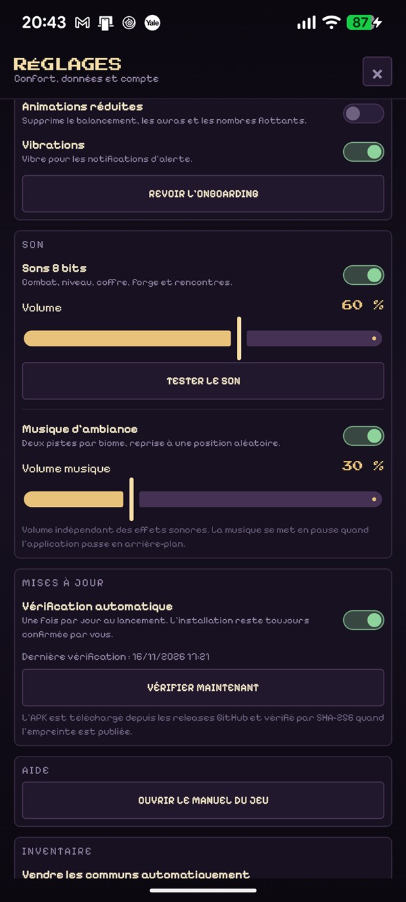
- 16 pistes originales : deux variantes de 3 minutes pour chacun des 8 biomes.
- Démarrage aléatoire : la piste commence à une position tirée au hasard, puis boucle.
- Changement de biome : fondu court vers la nouvelle ambiance.
- Activation : Musique d'ambiance ON/OFF, activée par défaut.
- Volume : réglage indépendant des effets sonores, 30 % par défaut.
- Arrière-plan : la musique se met en pause quand l'application n'est plus visible, puis reprend.
- Les pistes sont générées pour le projet et publiées en CC0.
Réglages avancés
En bas de l'écran, la carte Réglages avancés est repliée par défaut : elle ne s'ouvre qu'à la demande. Elle règle le budget de progression hors ligne, c'est-à-dire les pas consommés quand l'application est fermée.
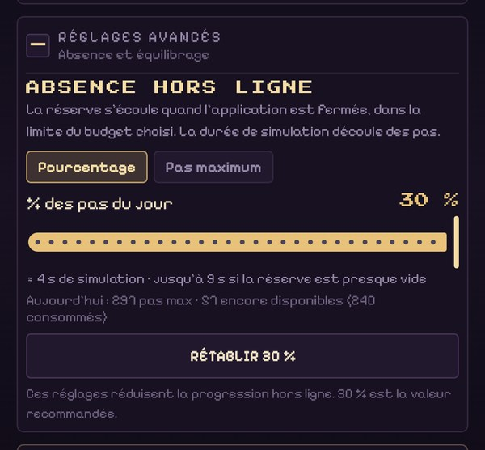
- Pourcentage : de 0 à 30 % des pas du jour, 30 % par défaut.
- Pas maximum : de 0 à 5 000 pas, avec les raccourcis 300, 1 000 et 3 000.
- Budget journalier : ce qui a déjà été consommé hors ligne aujourd'hui est déduit ; deux fermetures partagent la même enveloppe.
- Durée : elle découle des pas, environ 1 seconde pour 60 pas, jusqu'à deux fois plus si la réserve est presque vide. La simulation peut s'arrêter avant sur un événement.
- 0 désactive la progression hors ligne ; RÉTABLIR 30 % revient aux valeurs recommandées.
- Ces réglages ne peuvent que réduire la progression hors ligne.
17. Mises à jour
L'application se met à jour directement depuis les releases GitHub, sans Play Store.
- Vérification automatique : active par défaut. Elle interroge GitHub au plus une fois toutes les 24 h, au lancement de l'application.
- Vérification manuelle :
Réglages → Mises à jour → Vérifier maintenant. - Quand une version plus récente existe, un dialogue affiche la version disponible et propose Installer la mise à jour.
- L'APK signé est téléchargé depuis GitHub dans le cache de l'application, puis vérifié par SHA-256 lorsque l'empreinte est publiée dans les notes de release.
- Android demande toujours votre confirmation avant d'installer l'APK. La première fois, autorisez « Installer des applications inconnues » pour La Marche des Âmes.
- Une mise à jour installée avec la même signature conserve la progression, les réglages et la clé Garmin.
- Après l'installation, l'application propose d'ouvrir la page GitHub de la release pour lire les changements. Vous pouvez aussi choisir « Plus tard ».
18. Synchronisation Garmin

Jeton et clé
- La clé personnelle est échangée contre un jeton OAuth2 de 24 h.
- Il n'y a pas de refresh token : l'application redemande un jeton avec la clé.
- La clé et le jeton sont chiffrés dans Android Keystore.
- Une clé expirée ou révoquée provoque une erreur 401 : remplacez-la dans Compte Garmin.
Erreurs fréquentes
| Code | Signification | Action |
|---|---|---|
| 401 | Clé invalide, expirée ou révoquée | Créer une nouvelle clé et la coller. |
| 403 | Accès refusé | Vérifier les droits de la clé Garmin. |
| 429 | Trop de requêtes | Attendre le délai indiqué, puis réessayer. |
| 5xx | Garmin indisponible | Réessayer plus tard. |
19. Résumé d'absence
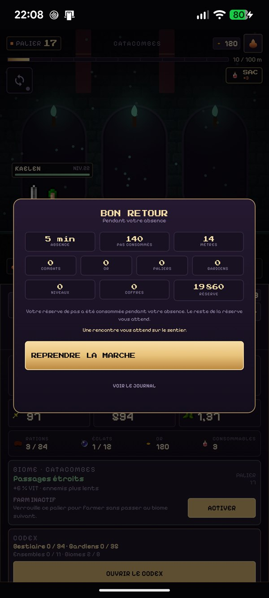
Quand vous fermez l'application avec une réserve de pas, cette réserve continue de s'écouler pendant votre absence. À votre retour, le jeu affiche un écran « BON RETOUR » qui résume la marche, les combats et les gains.
Quand le calcul se lance
- L'absence doit durer au moins 2 minutes.
- La simulation ne consomme que la réserve présente à la fermeture : les pas synchronisés à l'ouverture ne sont jamais avalés par l'absence.
- Le héros ne doit être ni au campement, ni sur une rencontre spéciale.
- L'onboarding doit être terminé.
Le résumé s'affiche dès 2 minutes d'absence, même si la réserve était vide : il indique alors que rien n'a avancé. La synchronisation des pas est téléchargée en parallèle mais appliquée seulement à la fermeture du résumé : le compteur de pas et la réserve ne bougent qu'après « REPRENDRE LA MARCHE », et le message « Garmin synchronisé · +N pas » ou « Santé Connect synchronisé · +N pas » arrive à ce moment-là.
Le résumé liste aussi le butin : objets récupérés pendant l'absence, consommables, rations et éclats.
Consommation de la réserve
La simulation utilise le rythme actif normal (30 ou 60 pas par seconde selon la taille de la réserve), avec un budget réglable dans Réglages avancés et trois garde-fous :
La première limite atteinte arrête la simulation. Le budget est journalier : deux absences dans la même journée partagent la même enveloppe. Elle s'arrête aussi sur un événement : rencontre spéciale, nouveau coffre, passage au camp ou portail du gardien à 90 m. Le gardien n'est jamais engagé automatiquement : le choix Engager / Farmer / Camper vous attend à la reprise. La réserve restante n'est pas détruite : elle vous attend et sera consommée normalement à votre retour.
Contenu du résumé
- durée de l'absence ;
- pas consommés et mètres parcourus ;
- combats, paliers franchis et gardiens vaincus ;
- or gagné, niveaux gagnés et coffres ouverts ;
- réserve de pas restante.
Deux boutons : REPRENDRE LA MARCHE ferme le résumé, VOIR LE JOURNAL ouvre directement le journal des événements.
Rencontre spéciale
Si la simulation tombe sur une rencontre spéciale, elle s'arrête immédiatement. Le résumé l'indique (« Une rencontre vous attend sur le sentier »), puis la rencontre s'affiche normalement. Le jeu ne choisit jamais à votre place.
Défaite contre un gardien
Si le héros est repoussé pendant la simulation, le résumé l'indique et vous retrouvez la zone de farm correspondante. Aucun combat n'est résolu automatiquement sans que vous le sachiez.
Fusion avec la synchronisation des pas
Si une synchronisation de pas (Garmin ou Santé Connect) et une absence arrivent en même temps, les deux rapports sont fusionnés en un seul écran : les pas importés et la consommation de la réserve apparaissent ensemble, sans double comptage. Le titre devient alors « Absence et rattrapage des pas ».
Rapport persistant
Le résumé reste disponible tant que vous n'avez pas appuyé sur REPRENDRE LA MARCHE. Quitter l'application ou changer d'écran ne le marque pas comme lu.
20. Questions fréquentes
Pourquoi le jeu a-t-il avancé pendant que j'étais absent ?
C'est le résumé d'absence : la réserve de pas s'écoule pendant la fermeture de l'application, dans la limite du budget d'absence (30 % des pas du jour par défaut, réglable dans Réglages avancés) et de 4 minutes simulées. La réserve restante est conservée. La simulation s'arrête au portail du gardien à 90 m ; le gardien n'est jamais engagé automatiquement. Voir Résumé d'absence.
Le héros est bloqué et n'avance plus.
La réserve de pas est probablement à zéro. Le héros repart à la prochaine synchronisation contenant de nouveaux pas. Vérifiez le nombre de pas du jour et la dernière synchronisation.
Je suis devant la porte du gardien mais il n'y a pas de monstre.
Le portail apparaît dès 90 m. Le gardien n'apparaît qu'après ENGAGER ; le combat se déroule alors à 100 m. S'il manque quelques mètres, il faut 10 pas par mètre. Le libellé « EN ATTENTE DE PAS » s'affiche quand la réserve est vide.
Le coffre me bloque.
Un coffre ne bloque jamais la marche. « Continuer la marche » ferme sa fiche. Si vous avez lancé « Consacrer mes pas », rouvrez le coffre et choisissez « Arrêter le forçage » : la progression de la serrure est conservée.
La synchronisation renvoie toujours le même nombre de pas.
Garmin n'a pas encore reçu les nouveaux pas de la montre (ou l'application qui alimente Santé Connect n'a pas écrit). Ouvrez Garmin Connect / l'app de santé, laissez la montre synchroniser, puis appuyez sur Synchroniser.
Je ne vois pas mes rations.
Elles sont dans la carte RESSOURCES de l'onglet Stats, dans l'en-tête (icône viande) et dans le camp, sur les actions de soin.
Mes notifications ne fonctionnent pas.
Vérifiez Réglages → Notifications, puis la permission Android. Sur Android 13+, la permission est demandée au premier lancement. Vous pouvez l'ouvrir depuis les réglages système.
Que se passe-t-il quand l'inventaire est plein ?
Le nouvel objet est comparé au moins bon objet non verrouillé du sac. Si le nouveau est meilleur, l'ancien part au coffre de camp et le nouveau reste dans le sac ; sinon, le nouveau part au coffre. Les objets verrouillés sont protégés. Les non identifiés utilisent un score provisoire rareté + niveau.
Comment sauvegarder ou changer de téléphone ?
Réglages → Sauvegarde → Exporter. Le fichier JSON contient la progression, jamais la clé Garmin. Sur le nouveau téléphone, installez l'app, choisissez votre source de pas, puis Importez la sauvegarde et confirmez l'aperçu.
La progression est aussi enregistrée automatiquement toutes les 30 secondes environ, à chaque changement de palier ou de niveau, et juste avant une mise à jour de l'application.
Puis-je désactiver les sons ou changer le volume ?
Oui : Réglages → Son. Le réglage concerne les effets du jeu, pas les notifications Android.
21. Données et confidentialité
- La progression, les préférences et la sauvegarde restent sur l'appareil.
- La clé et le jeton Garmin sont chiffrés dans Android Keystore ; ils ne partent que vers Garmin.
- Avec Santé Connect, les pas sont lus localement (permission
READ_STEPS), jamais envoyés à l'éditeur. - L'application ne contacte que Garmin (source Garmin) et GitHub (mises à jour, version GitHub). Aucun serveur éditeur, aucune publicité, aucun traceur.
- « Révoquer la clé » supprime la clé et le jeton ; « Effacer la progression » remet le jeu à zéro.
- Politique complète : brunothesatellite.github.io/idle-step-rpg/privacy.
22. Licences et crédits
- Code et textes : MIT — brunothesatellite.
- Pixel art : Dungeon Crawl Stone Soup contributors, CC0 1.0.
- Sons 8 bits : générés pour ce projet, CC0 1.0.
- Polices : Pixelify Sans et Press Start 2P, SIL Open Font License 1.1.
- Détails :
LICENSES.md,assets/CREDITS.md,assets/audio/LICENSE.txt.
Merci d'avoir marché jusqu'ici. Bonne route dans les cryptes.